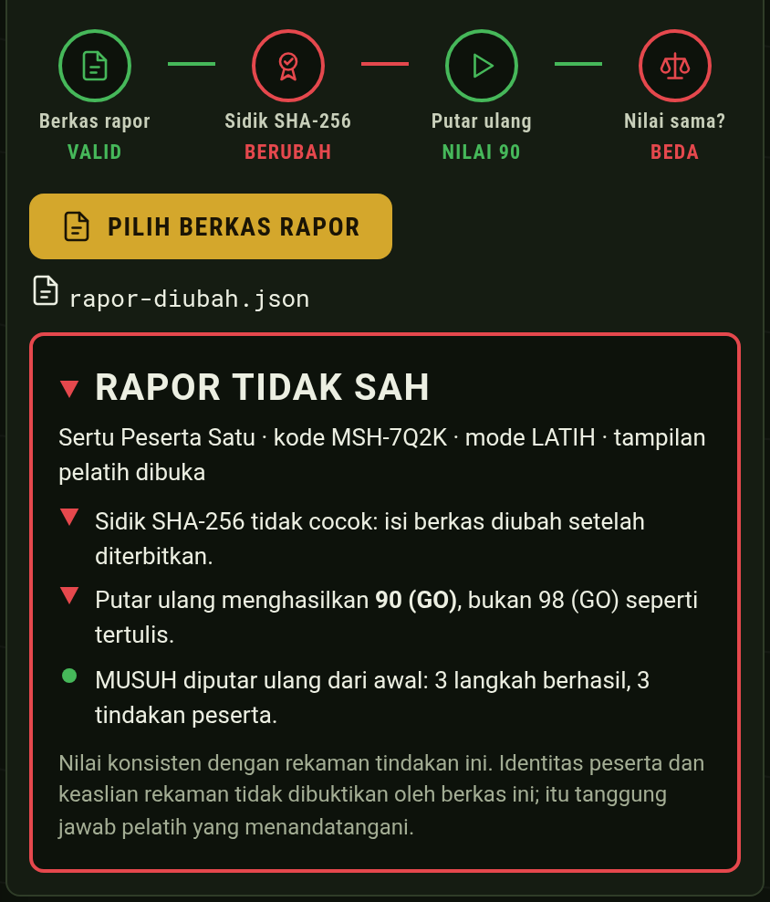
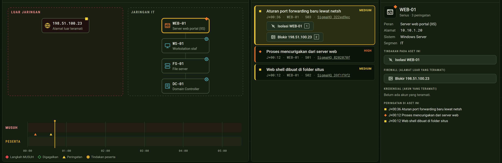
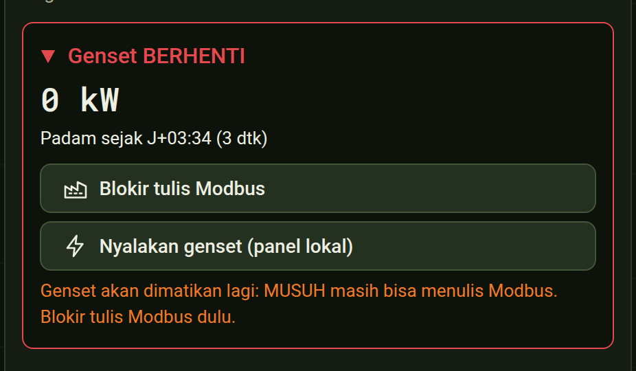

Rapor membuktikan konsistensi nilai dengan rekaman tindakan. Identitas peserta dibuktikan tanda tangan pelatih, bukan berkas.

Berkas diubah ke 98 → TIDAK SAH, nilai asli 90
| Skenario | Dasar |
|---|---|
| Pengambilalihan direktori jaringan markas IT · 8 tahap · 11 rute | Pola Red Team TNI di Keris Woomera 2026; teknik dari MITRE ATT&CK G1017 (Volt Typhoon) |
| Ransomware di pusat data satuan IT · 6 tahap · 9 rute | Kronologi forensik BSSN atas PDNS 2 (Juni 2024); MITRE ATT&CK S1202 LockBit 3.0 |
| Serangan ke pasokan listrik markas IT + OT · 6 tahap · 8 rute | Ukraina 2015 (ATT&CK C0028) dan FrostyGoop 2024 (C0041, Modbus) |

OPERASI: peta jaringan (kiri), antrean peringatan dengan tautan aturan SigmaHQ (tengah), detail aset dan tindakan (kanan)
Satu satuan, satu laptop, satu kode latihan. Bandingkan skor MUSUH dengan penilaian EXCON manusia.
Pussiberad menyusun skenario dan kode latihan; tim MTT Siber meninggalkannya di satuan.
Rapor terverifikasi dikumpulkan per teknik serangan, untuk menentukan prioritas pelatihan.
Usulan. Batasan dinyatakan terbuka: jaringan latihan adalah model, skenario rekaan, bobot nilai usulan perancang, belum diuji personel TNI AD.

IT + OT: genset tidak bisa dinyalakan sebelum tulis Modbus diblokir
Lawannya adil. Nilainya bisa diperiksa ulang.
github.com/daefery/musuh
Simbol status mengikuti Astro UXDS (Rocket Communications, Inc.), tanpa dukungan resmi pemerintah AS. Huruf Roboto, SIL OFL 1.1.